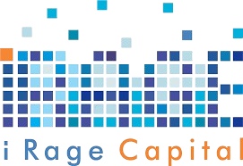

Computer Science & Electronics · KIIT University · 3rd Year
I design and ship backend systems at the intersection of ML, quantitative research, and data engineering — from async pipelines and backtesting infrastructure to full-stack research platforms. Focused on work that is production-grade, reproducible, and built with rigour.
About
I'm a Pre-Final Year B.Tech student in Electronics and Computer Science at KIIT University, maintaining a CGPA of 8.5. My work spans AI/ML, backend systems, and IoT — I care about building things that are robust, scalable, and actually useful in the real world.
I've shipped full-stack platforms in financial analytics, AI research aggregation, and smart hardware. Beyond development, I've taken on leadership roles early on as Head Boy, managing teams and organizing large-scale initiatives, and later worked within the startup ecosystem at KIIT E-Cell, contributing to collaborations and outreach. I continue to strengthen my problem-solving and system design skills to build scalable and impactful solutions.
Skills
Projects
Experience
Achievements

Contact
Open to research collaborations, internships, and interesting side projects.